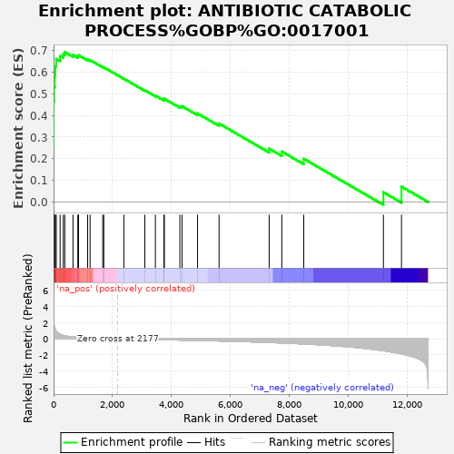
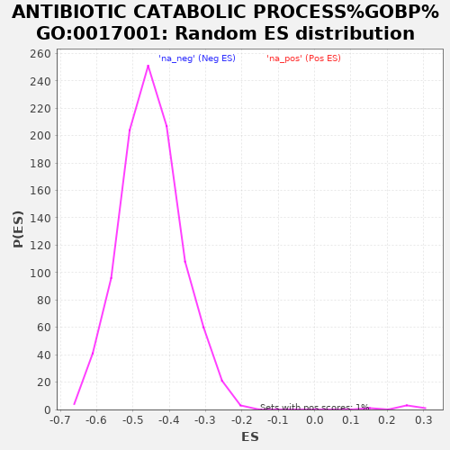

| | | Dataset | rankInfo |
| Phenotype | NoPhenotypeAvailable |
| Upregulated in class | na_pos |
| GeneSet | ANTIBIOTIC CATABOLIC PROCESS%GOBP%GO:0017001 |
| Enrichment Score (ES) | 0.6930354 |
| Normalized Enrichment Score (NES) | 2.80362 |
| Nominal p-value | 0.0 |
| FDR q-value | 0.0 |
| FWER p-Value | 0.0 |
Table: GSEA Results Summary

Fig 1: Enrichment plot: ANTIBIOTIC CATABOLIC PROCESS%GOBP%GO:0017001
Profile of the Running ES Score & Positions of GeneSet Members on the Rank Ordered List
| SYMBOL | RANK IN GENE LIST | RANK METRIC SCORE | RUNNING ES | CORE ENRICHMENT | | 1 | HBZ | 0 | 6.373 | 0.2522 | Yes |
| 2 | HBM | 1 | 5.439 | 0.4675 | Yes |
| 3 | PRDX5 | 20 | 1.640 | 0.5309 | Yes |
| 4 | GPX1 | 39 | 1.346 | 0.5828 | Yes |
| 5 | HBA2 | 59 | 1.156 | 0.6271 | Yes |
| 6 | HBB | 91 | 0.931 | 0.6615 | Yes |
| 7 | HBQ1 | 222 | 0.587 | 0.6745 | Yes |
| 8 | AKR1C3 | 330 | 0.416 | 0.6825 | Yes |
| 9 | PRDX1 | 381 | 0.366 | 0.6930 | Yes |
| 10 | SULT1A1 | 660 | 0.224 | 0.6800 | No |
| 11 | RENBP | 824 | 0.175 | 0.6741 | No |
| 12 | NAGK | 848 | 0.168 | 0.6789 | No |
| 13 | PRDX2 | 1157 | 0.112 | 0.6591 | No |
| 14 | PRDX3 | 1240 | 0.098 | 0.6565 | No |
| 15 | GNPDA1 | 1670 | 0.041 | 0.6243 | No |
| 16 | ADH5 | 1706 | 0.038 | 0.6231 | No |
| 17 | MPO | 2387 | -0.014 | 0.5700 | No |
| 18 | SULT1A3 | 3099 | -0.066 | 0.5166 | No |
| 19 | HBD | 3458 | -0.092 | 0.4921 | No |
| 20 | CAT | 3753 | -0.115 | 0.4734 | No |
| 21 | PCK2 | 3759 | -0.116 | 0.4777 | No |
| 22 | GPX3 | 4289 | -0.157 | 0.4422 | No |
| 23 | AMDHD2 | 4363 | -0.164 | 0.4429 | No |
| 24 | HBG1 | 4889 | -0.203 | 0.4096 | No |
| 25 | SULT1A2 | 5620 | -0.268 | 0.3626 | No |
| 26 | NPL | 7322 | -0.455 | 0.2466 | No |
| 27 | GNPDA2 | 7752 | -0.518 | 0.2333 | No |
| 28 | HBG2 | 8498 | -0.640 | 0.1999 | No |
| 29 | PXDNL | 11204 | -1.474 | 0.0451 | No |
| 30 | SULT1B1 | 11817 | -1.874 | 0.0710 | No |
Table: GSEA details [plain text format]

Fig 2: ANTIBIOTIC CATABOLIC PROCESS%GOBP%GO:0017001: Random ES distribution
Gene set null distribution of ES for ANTIBIOTIC CATABOLIC PROCESS%GOBP%GO:0017001